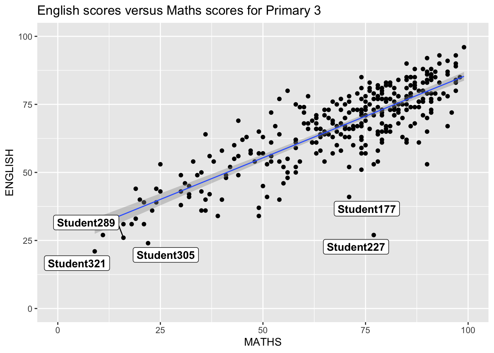
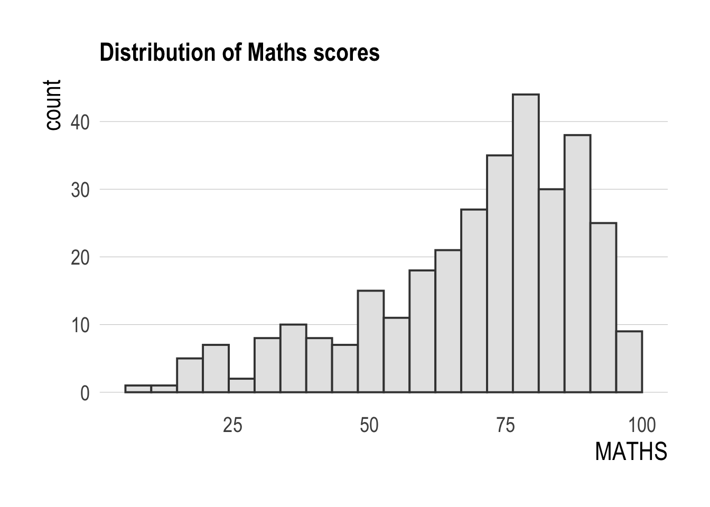
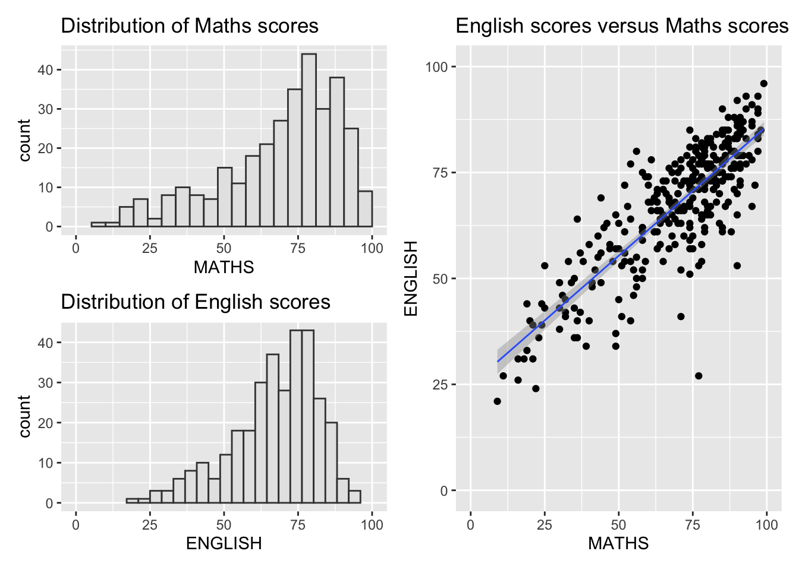
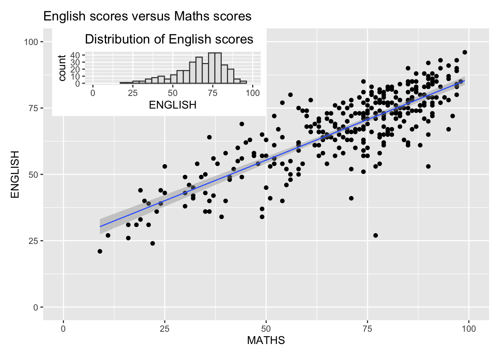

Code
if (!require(pacman)) install.packages("pacman")
pacman::p_load(
ggrepel,
patchwork,
ggthemes,
hrbrthemes,
tidyverse
)
exam_data <- read_csv("Exam_data.csv")Beyond ggplot2 Fundamentals
This hands-on exercise recreates the key techniques from Chapter 2 of R for Visual Analytics. The focus is on extending ggplot2 with three companion packages: ggrepel for readable annotations, ggthemes and hrbrthemes for professional themes, and patchwork for composing multiple plots into a single figure.
if (!require(pacman)) install.packages("pacman")
pacman::p_load(
ggrepel,
patchwork,
ggthemes,
hrbrthemes,
tidyverse
)
exam_data <- read_csv("Exam_data.csv")DT::datatable(
exam_data,
class = "compact",
options = list(
pageLength = 10,
scrollX = TRUE
)
)Using geom_label() directly causes labels to overlap and become unreadable.
ggplot(exam_data, aes(x = MATHS, y = ENGLISH)) +
geom_point() +
geom_smooth(method = lm, linewidth = 0.5) +
geom_label(aes(label = ID), hjust = 0.5, vjust = -0.5) +
coord_cartesian(xlim = c(0, 100), ylim = c(0, 100)) +
ggtitle("English scores versus Maths scores for Primary 3")`geom_smooth()` using formula = 'y ~ x'
geom_label_repel()ggrepel replaces the geoms with repel-aware versions that push labels apart.
ggplot(exam_data, aes(x = MATHS, y = ENGLISH)) +
geom_point() +
geom_smooth(method = lm, linewidth = 0.5) +
geom_label_repel(aes(label = ID), fontface = "bold") +
coord_cartesian(xlim = c(0, 100), ylim = c(0, 100)) +
ggtitle("English scores versus Maths scores for Primary 3")`geom_smooth()` using formula = 'y ~ x'
ggplot(exam_data, aes(x = MATHS)) +
geom_histogram(bins = 20, boundary = 100, color = "grey25", fill = "grey90") +
theme_gray() +
ggtitle("Distribution of Maths scores")
ggthemes provides themes that mimic well-known publications, e.g. The Economist.
ggplot(exam_data, aes(x = MATHS)) +
geom_histogram(bins = 20, boundary = 100, color = "grey25", fill = "grey90") +
ggtitle("Distribution of Maths scores") +
theme_economist()
hrbrthemes focuses on typographic detail and axis label placement with theme_ipsum().
ggplot(exam_data, aes(x = MATHS)) +
geom_histogram(bins = 20, boundary = 100, color = "grey25", fill = "grey90") +
ggtitle("Distribution of Maths scores") +
theme_ipsum(axis_title_size = 18, base_size = 15, grid = "Y")
p1 <- ggplot(exam_data, aes(x = MATHS)) +
geom_histogram(bins = 20, boundary = 100, color = "grey25", fill = "grey90") +
coord_cartesian(xlim = c(0, 100)) +
ggtitle("Distribution of Maths scores")
p2 <- ggplot(exam_data, aes(x = ENGLISH)) +
geom_histogram(bins = 20, boundary = 100, color = "grey25", fill = "grey90") +
coord_cartesian(xlim = c(0, 100)) +
ggtitle("Distribution of English scores")
p3 <- ggplot(exam_data, aes(x = MATHS, y = ENGLISH)) +
geom_point() +
geom_smooth(method = lm, linewidth = 0.5) +
coord_cartesian(xlim = c(0, 100), ylim = c(0, 100)) +
ggtitle("English scores versus Maths scores")+p1 + p2
| and /Two plots on top, one spanning the bottom.
(p1 / p2) | p3`geom_smooth()` using formula = 'y ~ x'
((p1 / p2) | p3) +
plot_annotation(tag_levels = "I")`geom_smooth()` using formula = 'y ~ x'
inset_element()p3 + inset_element(p2, left = 0.02, bottom = 0.7, right = 0.5, top = 1)`geom_smooth()` using formula = 'y ~ x'
patchwork <- (p1 / p2) | p3
patchwork & theme_economist()`geom_smooth()` using formula = 'y ~ x'
In this exercise, I learned that ggplot2 is only the starting point. ggrepel solves the very common problem of overlapping text annotations, turning an unreadable labelled scatterplot into a clear one. ggthemes and hrbrthemes let me adopt a polished, publication-grade look without hand-tuning every theme element. patchwork is the most powerful of the three for reporting: with simple +, |, and / operators I can assemble several plots into one coherent figure, tag the panels, and even inset one plot inside another.